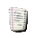

The Hot filter scans an image for pixels with RBG values that will give unsafe values of chrominance signal or composite signal amplitude when encoded into an NTSC or PAL color signal.
|  | This tends to happen for certain high intensity, high saturation colors that are rare in real scenes, but can be easily found in synthetic images. |
Hot Settings
This option will force the creation of a new layer containing the Hot adjustment if it is checked. If it is not, then the information will be rendered directly onto the image.
The two available options here pertain to the output format for the pixel scan.
There are three available options in this area.
Reduce Luminance: Reduce the intensity of the pixels while leaving the hue and saturation unmodified.
Reduce Saturation: Reduce the saturation of the pixels while leaving the hue and saturation unmodified.
Blacken: Blackens the pixels.